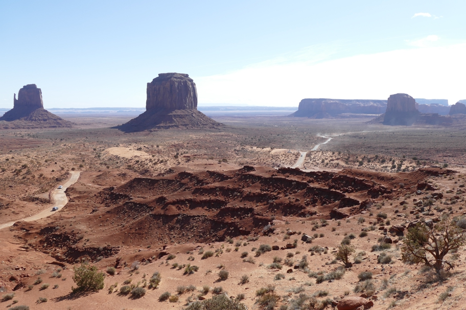

<--Previous Up Next-->

Taken after successfully returning to the visitor center. East Mitten and Merrick Butte are in the background on the left. We had driven a little farther than the buttes on the right.
Arizona Monument Valley